Hey! My name is Quinten. (IGN: Qu1nten)
Minecraft has been my bread and butter for over 14 years now. In this time I’ve done pretty much everything Minecraft has to offer: made new friends, explored all biomes, sweated Bedwars for a year, gotten all advancements, blown up villages, dug 100,000 deepslate with just a pickaxe and done a lot of building.
Over the years there have been dozens of SMPs that I was fortunate to call home, each with its own unique reasons why I stayed around. Yet I have never been able to find an SMP quite like Nodenium: a server where I can not only express my creativity, but also meet like-minded people who enjoy building just as much as I do.
This server will be a new beginning for me, a place where I can hang out and build. No pressure, no deadlines and no competition. Just an incredibly talented and fun community I would be extremely happy to be a part of and actively contribute to, whether that’s collabs, helping out with server projects or just being around.
Below is a more in-depth showcase of three recent builds.
Thank you for taking my application into consideration.
A recent commission project of mine was made for the Lifesteal content creator MinuteTech. My goal with this build was to create a very atmospheric interior environment without overcomplicating the overall detail and decoration.
The interior only aligns with the exterior windows in very specific points, shaping the inside almost completely separate from the outside, allowing me to create denser, more specific areas and build a narrative from the entrance all the way up to the throne room. The build was made with survival players exploring and interacting with it in mind.
I love pushing the boundaries with vanilla-esque builds, like this project. Even though it was created in Creative, it only uses atmospheric tricks and vanilla blockstates that could be replicated in survival.
This is a very recent and still unfinished project of mine. The structure is completely integrated into the terrain around and underneath it. The terraformed sandy dunes surrounding the big rock are made with darker blocks while still having some more colourful elements to interrupt the duller feel. The rock itself is very specifically textured to be very dark and dead at the bottom, while lighter and even green near the structural area. The lush and colourful garden together with the bright white walls of the structure contrast its surroundings.
I always start a build by creating the shapes in regular stone. When the shape is correct I start blocking out where structures will be and slowly blend them into the terrain. When I have the base shapes for the structure integrated with the terrain I will start colouring the surrounding area to match with the buildings' colours.
By far my favourite survival build I’ve ever made. A giant underground cathedral built underneath an ocean. This building was originally created to be an entrance to the end portal but later became my storage and even a custom creeper farm integrated into the walls. This build is extremely colourful and detailed yet maintains a very repeatable design philosophy I kept throughout the build.
The mining process was a much larger undertaking than the actual building itself. But it was a very fun project slowly seeing the shape of the structure appearing in the dug-out deepslate walls.
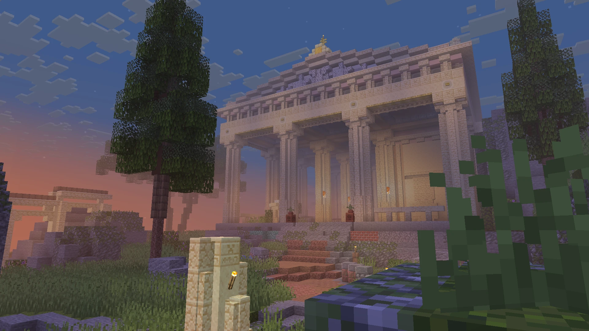
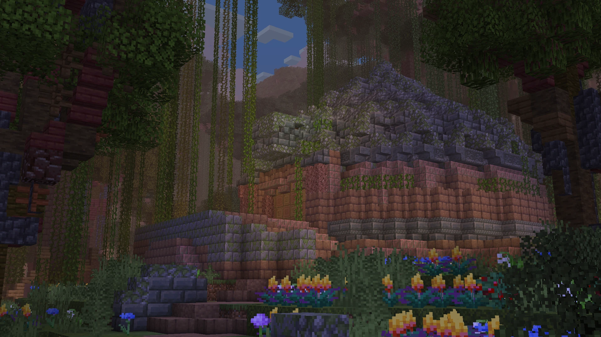
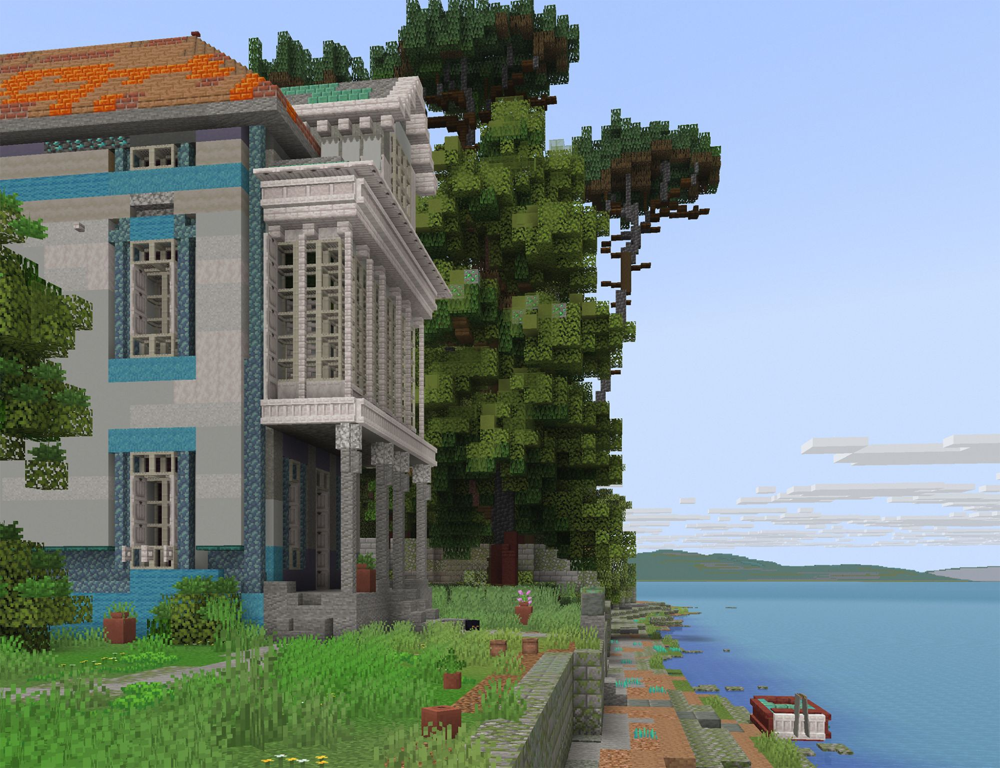
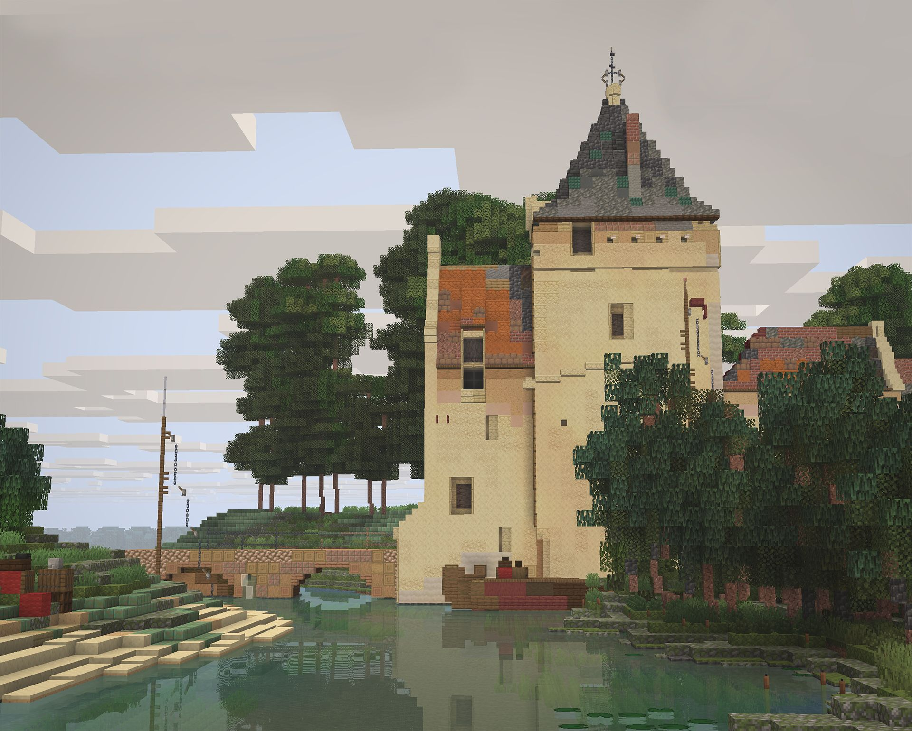
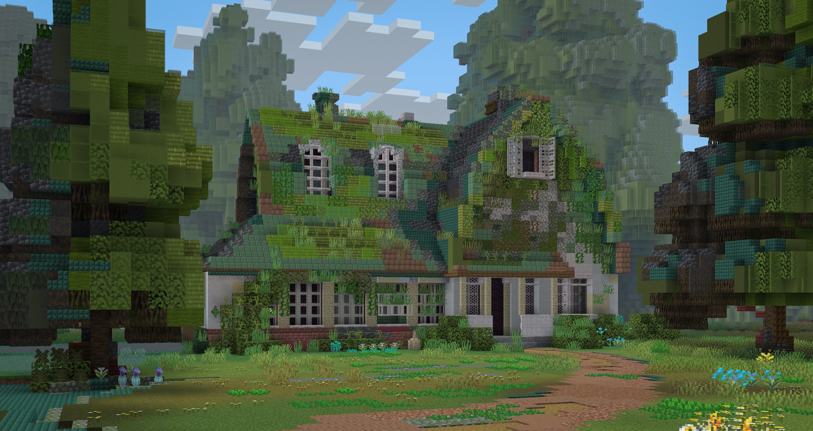
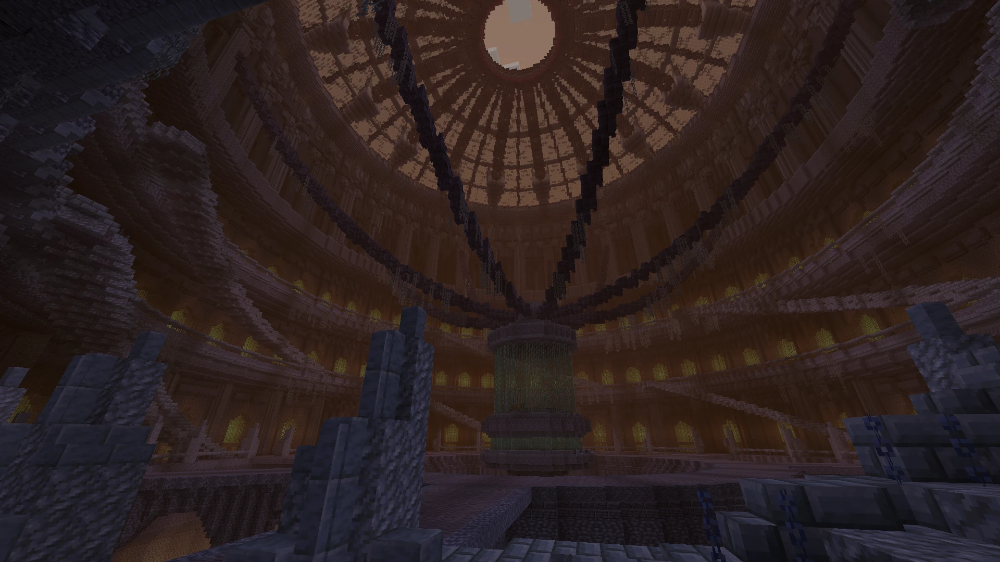
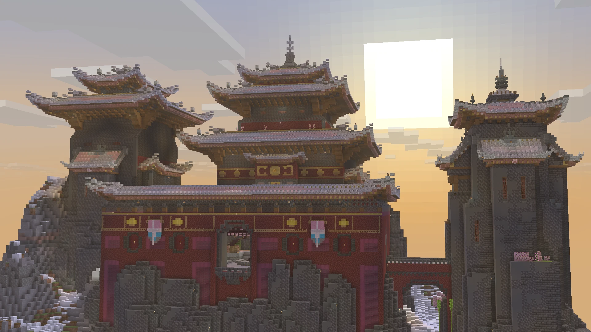
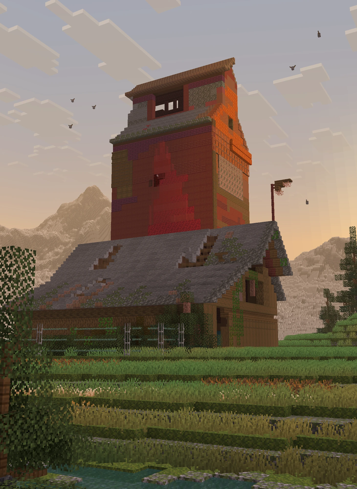
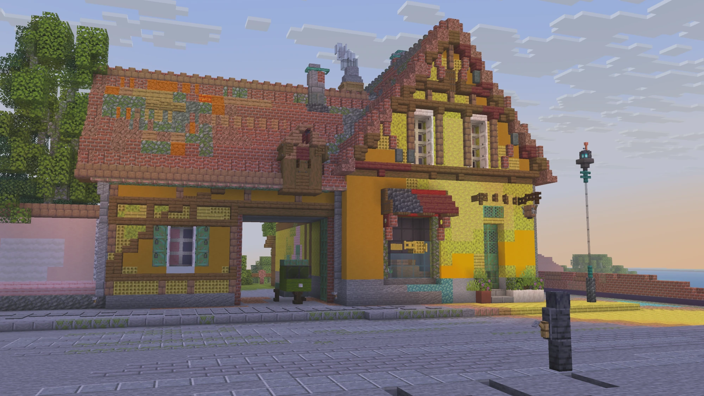
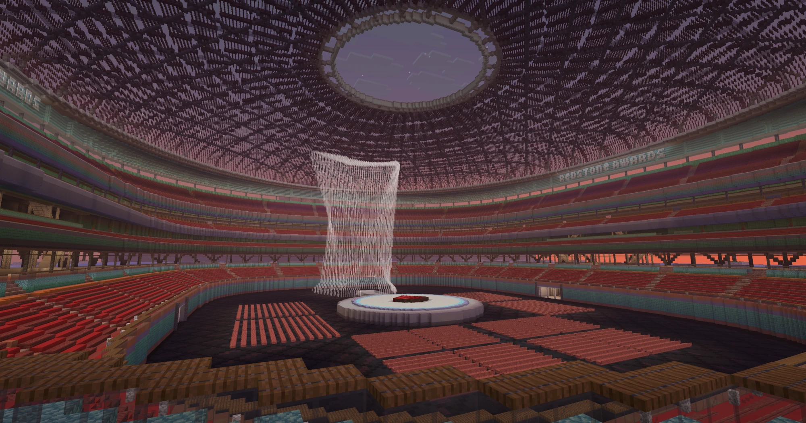
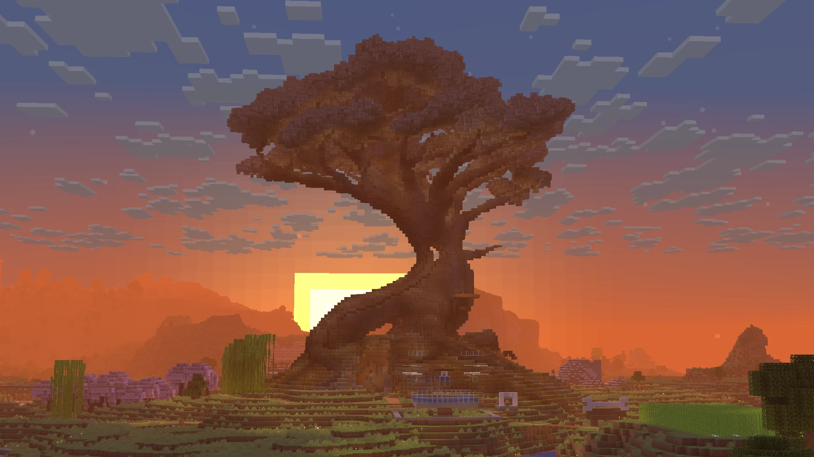
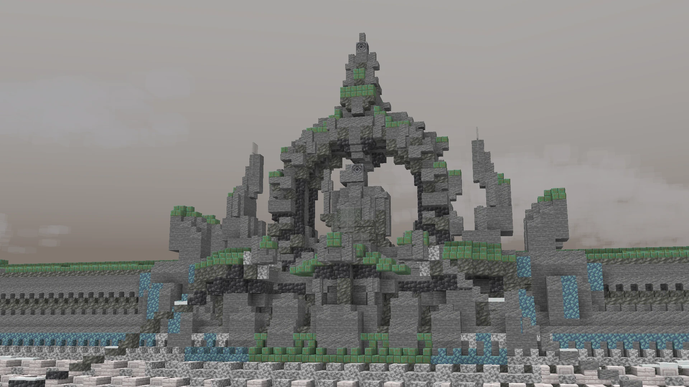
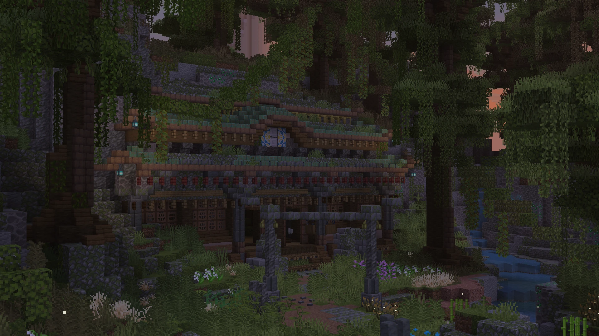
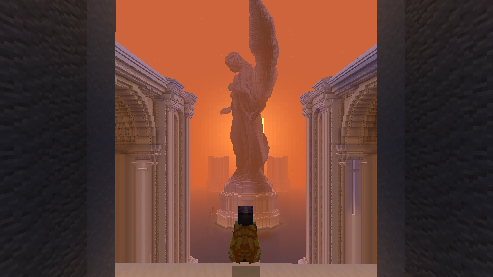
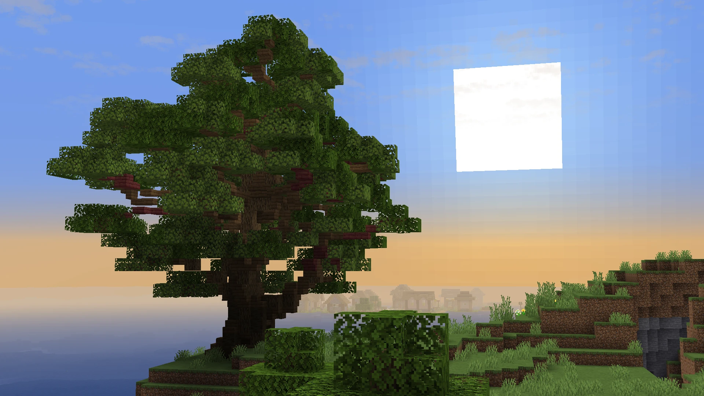
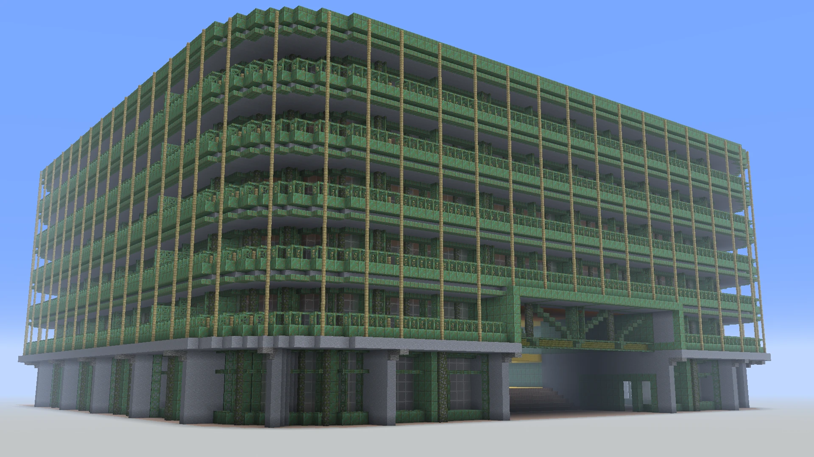
If you want to see even more of my work go here